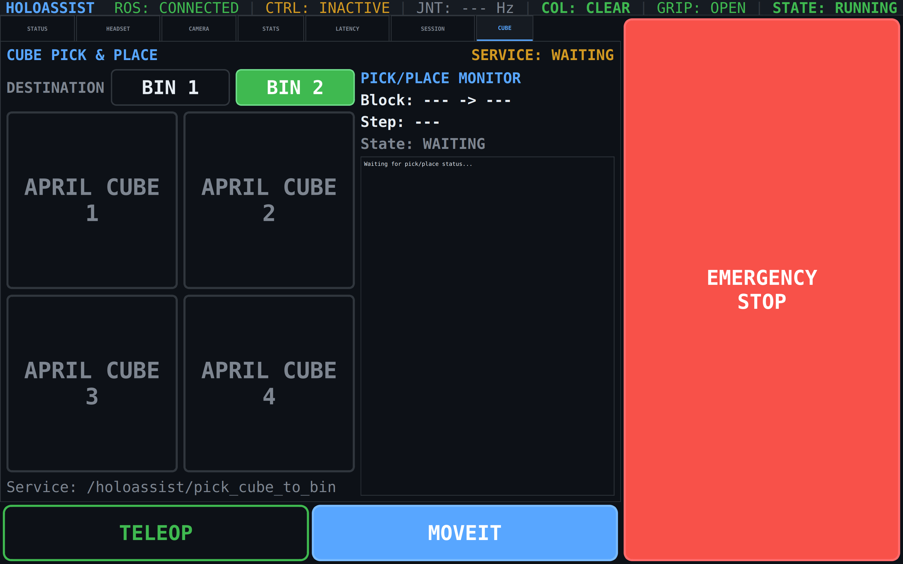
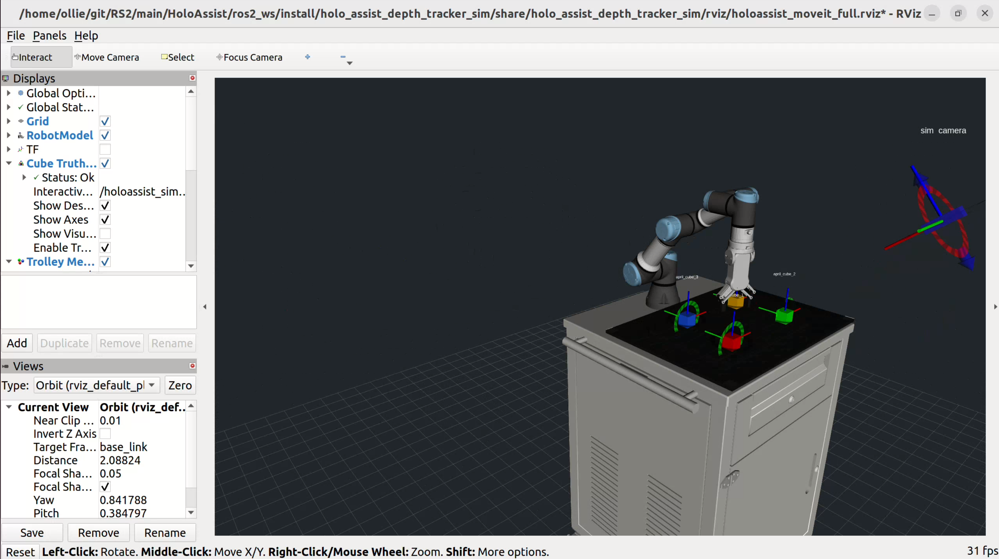
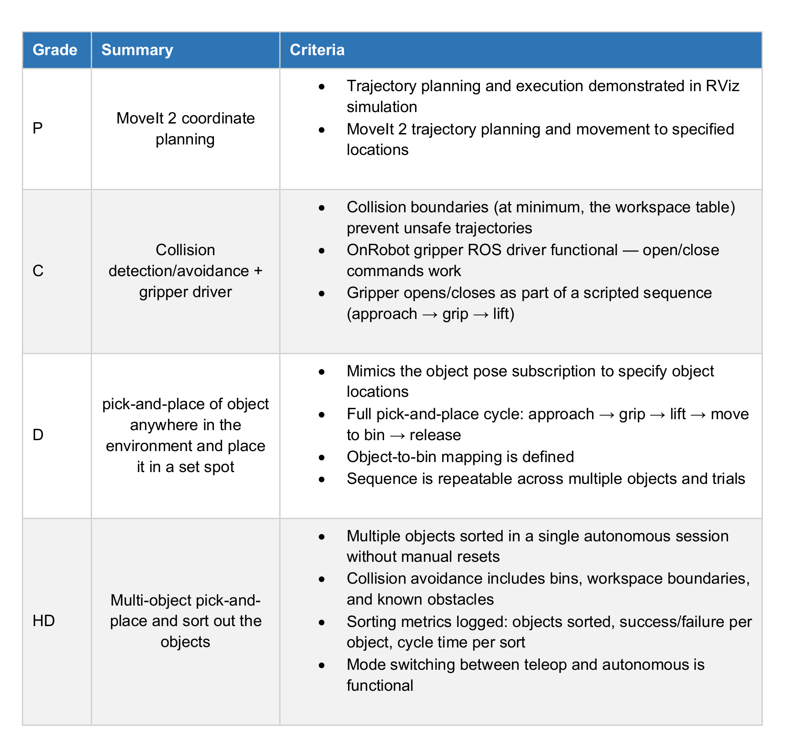

HoloAssist — Subsystem
MoveIt 2 sorting stack for the UR3e + OnRobot RG2. A cube/bin service call consumes live AprilTag poses, runs a Cartesian-first pick-and-place sequence, and falls back to OMPL pose planning when straight-line motion is not reachable.
The autonomous subsystem is a MoveIt 2 pick-and-place layer. It exposes
/holoassist/pick_cube_to_bin, accepts a cube name and destination bin, transforms
the selected cube pose into base_link, then queues a full autonomous sequence:
home, approach, open, descend, grip, lift, move to bin, place, release, retreat.
The implementation matches the High Distinction target by supporting repeated cube/bin requests without manual reset, four parameterised bin destinations, a MoveIt planning scene with floor safety and block collision updates, and timestamped JSON status output for sort progress, success/failure, and cycle-time analysis.
Lead: Oliver Lau · Package: holoassist_movement · Planner: MoveIt 2, Cartesian paths, OMPL fallback
/holoassist/pick_cube_to_bin through perception pose lookup, MoveIt planning,
trajectory execution, gripper control, and JSON status reporting.


/holoassist/pick_cube_to_bin accepts april_cube_1 to april_cube_4 and bin_1 to bin_4. Short IDs 1 to 4 are normalised.
Service node reads /holoassist/perception/april_cube_N_pose, transforms workspace_frame to base_link, then publishes JSON on /pick_place/command.
coordinate_listener tries Cartesian planning first, then OMPL pose-goal fallback. Hardware execution uses /scaled_joint_trajectory_controller/joint_trajectory.
pick_place_sequencer runs the explicit state machine and publishes timestamped JSON status for each step, completion, and error.
Every pick triggers this six-stage state machine. Cartesian path attempted first; falls back to MoveIt OMPL pose-goal on failure.
ros2 topic echo /pick_place/status — publishes timestamped JSON at each stage.
All positions in base_link frame, gripper pointing down. Configured in config/bin_poses.json — edit and relaunch to change, no code changes needed.
| Bin | X (m) | Y (m) | Z (m) |
|---|---|---|---|
| bin_1 | 0.30 | 0.00 | 0.05 |
| bin_2 | −0.30 | 0.00 | 0.05 |
| bin_3 | 0.30 | −0.20 | 0.05 |
| bin_4 | 0.30 | −0.10 | 0.05 |
Set through ros2 launch holoassist_movement movement.launch.py and the movement package configs. Relaunch after changing.
The pick-and-place stack is triggered by a service, then coordinated through JSON command/status topics.
| Name | Type | Description |
|---|---|---|
| /holoassist/pick_cube_to_bin | PickCubeToBin service | Queues cube-to-bin sorting request |
| /pick_place/command | String JSON | Sequencer command with block pose and destination bin |
| /pick_place/mode | String | run, stop, or pause state control |
| /pick_place/status | String JSON | Block, bin, current step, state, timestamp, and error details |
| /holoassist/movement/target_pose | Pose | Full pose goals from the sequencer to MoveIt |
| /holoassist/movement/target_point | Point | XYZ target point for manual motion tests |
| /holoassist/movement/state | String | QUEUED → PLANNING → EXECUTING → COMPLETE/FAILED |
| /holoassist/movement/debug | String JSON | Planning and execution diagnostics |
| /finger_width_trajectory_controller/joint_trajectory | JointTrajectory | RG2 open/close width trajectory |
Current values are from ros2_ws/src/HoloAssist_Movement in the up-to-date HoloAssist tree.
base_link-1.0 for relative modeOliver's autonomous subsystem evidence is mapped against the criteria, with the HD target focused on perception-driven multi-object sorting, collision-aware MoveIt execution, and timestamped status metrics from repeated cube/bin runs.
| Level | Criteria focus | Autonomous evidence |
|---|---|---|
| Pass | MoveIt 2 simulation | UR3e planning group, RViz planning scene, and basic target execution. |
| Credit | Collision and gripper control | Floor/object collision updates with RG2 open/close trajectory commands. |
| Distinction | Perception-driven pick-and-place | Live AprilTag cube poses feed the cube-to-bin service and sequenced MoveIt motions. |
| High Distinction | Repeatable autonomous sorting | Multiple cube/bin requests run without manual reset, with JSON status, failures, and timing metrics logged. |

/holoassist/perception/april_cube_N_pose. Start perception, show the cube to the camera, and confirm the workspace TF is available./holoassist/pick_cube_to_bin queues the request; watch /pick_place/status for the real step-by-step result, failure reason, and timestamped metrics.MOVEIT mode so scaled_joint_trajectory_controller and finger_width_trajectory_controller are active. On URSim or hardware, External Control must also be running.velocity_scale:=0.05. If Cartesian descents are still too aggressive, set cartesian_retime_velocity_scale:=0.03 for slower straight-line paths.grasp_z_absolute, pregrasp_z_offset, and place_z_offset. If XY is also wrong, re-check the workspace_frame → base_link calibration and bin_poses.json.